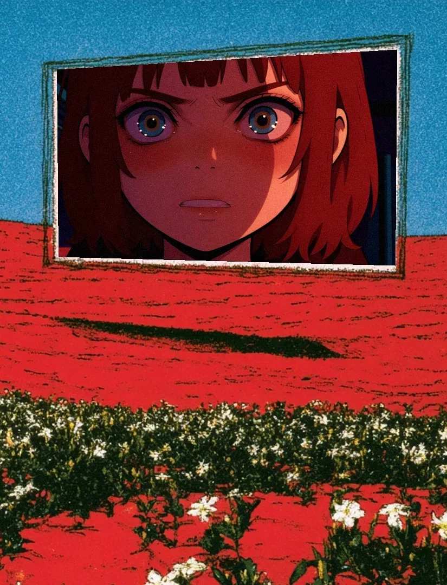

平田茉莉花
Marika Hirata — director, METREA
- DIRECTION 01—08
- STORY & SCREENPLAY 02—08
- CHARACTER DESIGN 04 06
- LYRICS & MUSIC 01 06 07
- GAME DESIGN 08
 GMO DESIGN AWARD 2025GRAND PRIX誰にもWAIFF JAPAN 2026 KYOTOGRAND PRIXThis is me
GMO DESIGN AWARD 2025GRAND PRIX誰にもWAIFF JAPAN 2026 KYOTOGRAND PRIXThis is meUnlabeled stories for the unseen

Eight titles, in order of their latest milestone
完成した作品4本、開発中の企画3本、制作中のゲーム1本。年月は、完成・パイロット・サンプルなど、いちばん新しい節目。
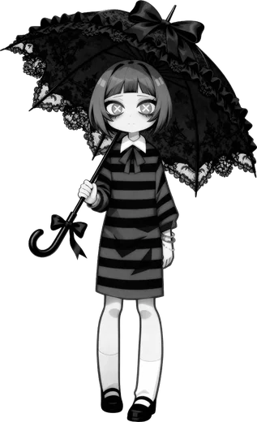
25.1101死にたい虫が煩くてアニメーションMVCompleted▶ WATCH
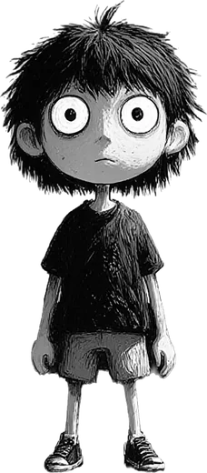
25.1202誰にも祝われない夜に短編アニメーションCompleted★ GRAND PRIXGMO DESIGN AWARD 2025▶ WATCH
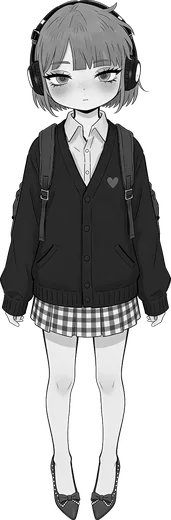
26.0203This is me短編アニメーションCompleted★ GRAND PRIXWAIFF JAPAN 2026 KYOTO▶ WATCH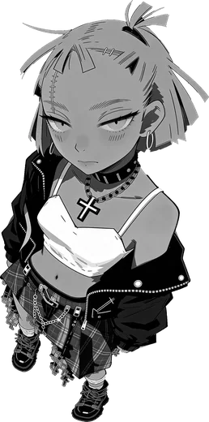
26.0404Ego Heart短編アニメシリーズSample film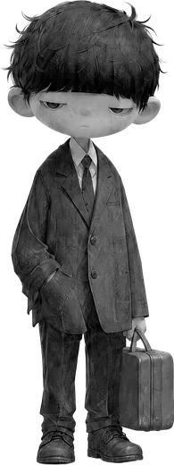
26.0505Rain onthe Meter短編アニメーションPilot
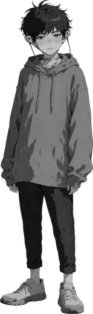
26.0706Judge長編アニメーションPilot▶ WATCH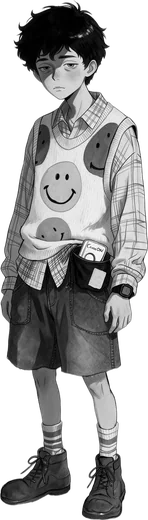
26.0907Honor短編アニメーションCompleted▶ WATCH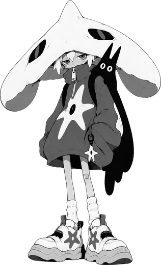
26.1008ホシノメアクションアドベンチャーIn production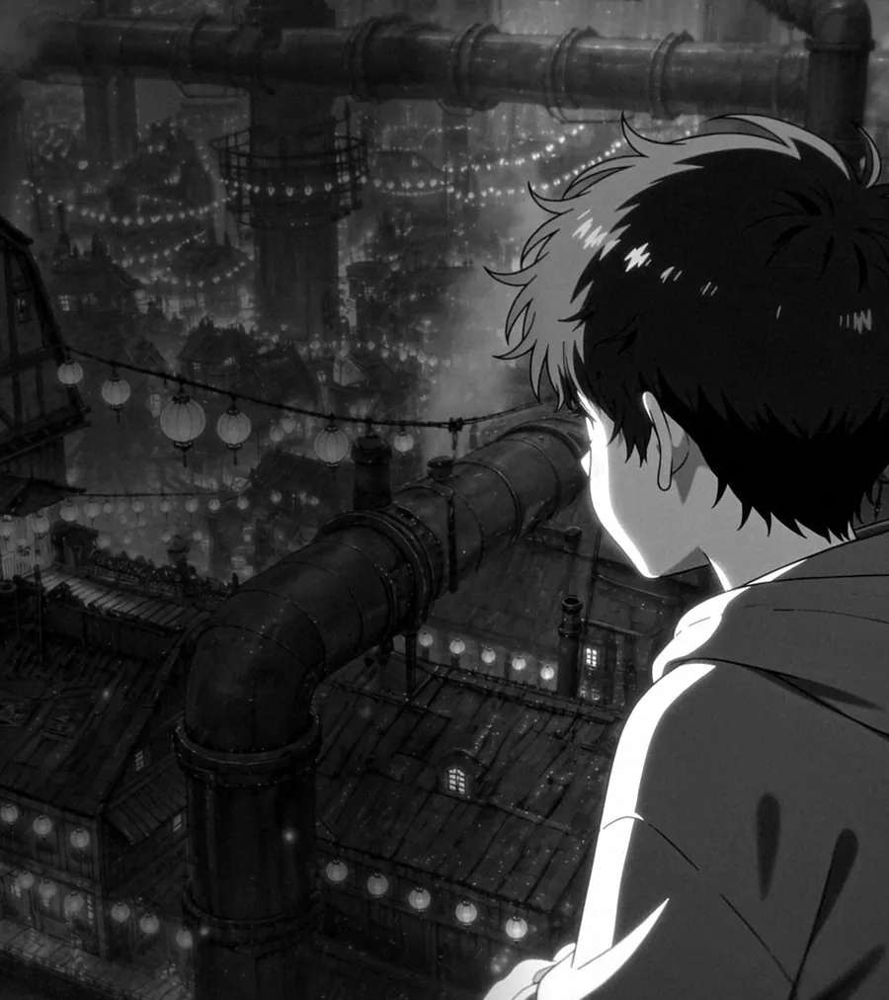
- 男子This is me
- 十代の天才HONOR
- 名前のない魂HONOR
- 病気JUDGE
- 凶悪なオオカミJUDGE
- 怪物EGO HEART
- 優等生EGO HEART
- 売れない配信者死にたい虫が煩くて
- 良家の少年RAIN ON THE METER
- 元ヤクザRAIN ON THE METER
Labels quoted from the character sheets of each work.
Statement
Unlabeled.
見てもらえなかった子が、
“自分”を見つける夜を描く。
ラベル、裁き、いいねの数。世界が決めた“わかりやすさ”の外側にいる子どもたちを、作品ごとにまったく違う絵柄で描いています。
Three constants
- 01ラベルを貼られた子どもa child the world has labelled
- 02赤という、ひとつの色one colour: red
- 03作品ごとに変わる絵柄a new style for every story
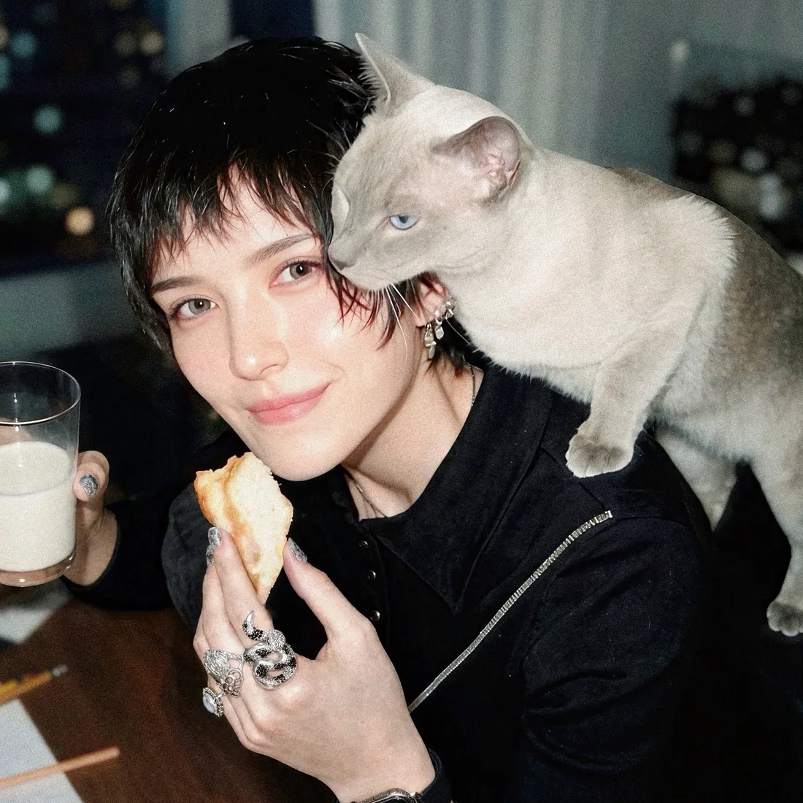
Profile
平田茉莉花
Marika Hirata
Film director — METREA
1997年生まれ、徳島県出身。
独学で映像制作と物語構成を学び、18歳で映像業界に参入。映像監督として、CM、ミュージックビデオ、テレビ番組、企業ブランディングなどを手掛ける。大手ブランドの広告映像の企画・演出と並行して、自主制作映画や独自プロジェクトの映像作品を発表している。
Born in 1997 in Tokushima, Japan. Self-taught in filmmaking and story structure, she entered the film industry at eighteen. As a director she has made commercials, music videos, television programmes and brand films. Alongside advertising for major brands, she releases independent films and original projects.
- DIRECTION
- STORY & SCREENPLAY
- CHARACTER DESIGN
- LYRICS & MUSIC
- GAME DESIGN
METREA — Tokyo
Commercial work
広告の仕事
大手ブランドの広告映像の企画・演出。CM、Web CM、イベント映像。
Role
Director / AI・映像制作
映像をタップすると、本編が音つきで再生されます。
Commercial work — 02
World guide
Six motifs that come back in every story.
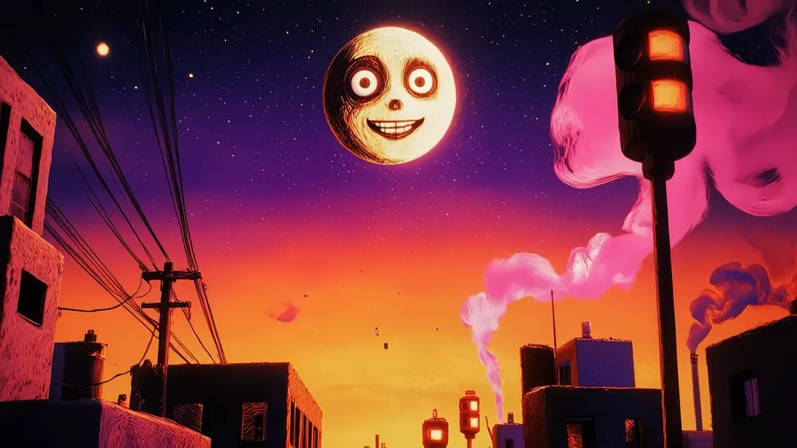
夜NIGHT物語の多くは夜に起きる。祝われない誕生日の夜、雨の香港、ネオンの街。誰にも祝われない夜に →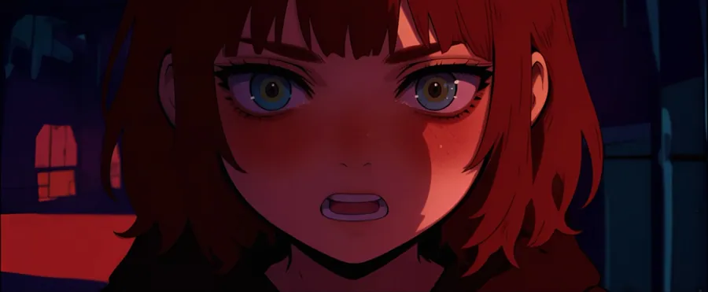
赤RED赤いヒール、夕焼けの赤、赤いパーカー、赤いタクシー。主人公のそばには、いつも赤がある。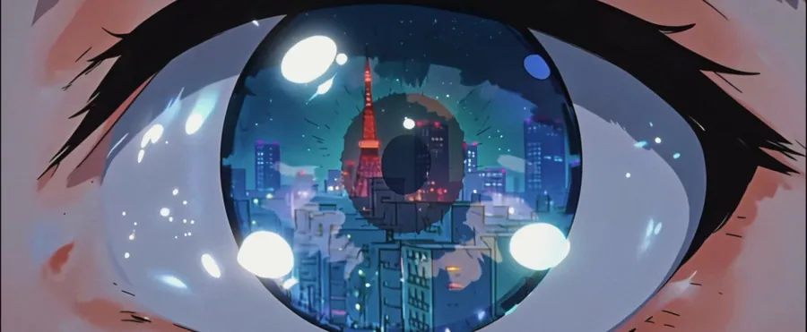
目EYES瞳に映る東京、空に閉じた大きな目。「見る／見られる」が物語の芯になる。This is me →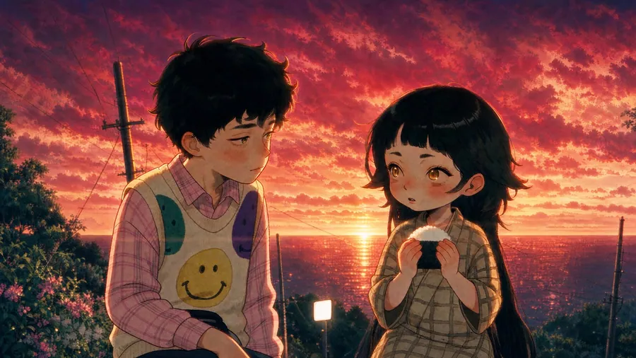
ごはんFOOD半分このおにぎり、焦げたケーキ、ミルク、ハンバーガー。食べることが、生きることの合図になる。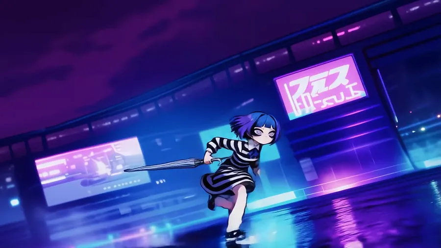
怪物MONSTERS死にたい虫、仮面の男、飢えた影、クロモノ、EGOの怪物。心の中の怪物が、かたちを持って現れる。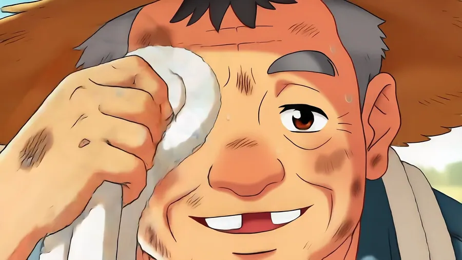
親PARENTS不器用な父のメッセージ、亡き母の赤いヒール。親との距離が、主人公を立ち上がらせる。死にたい虫が煩くて →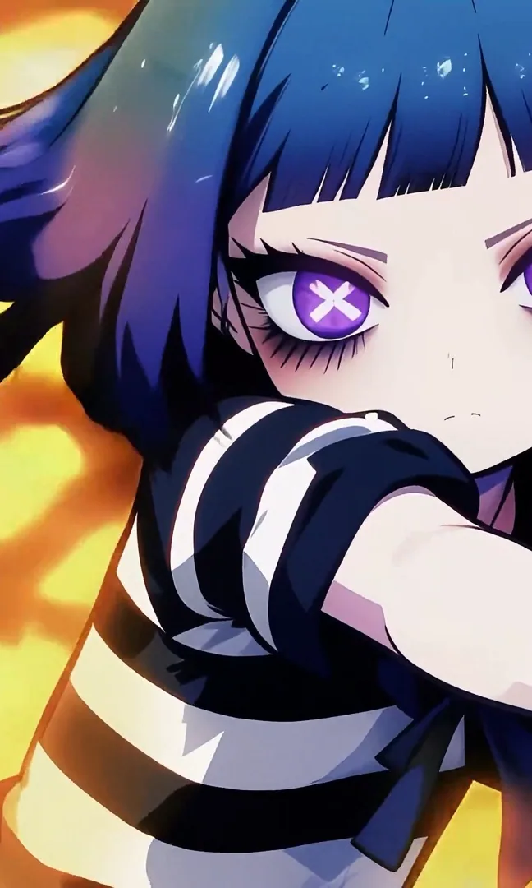
No. 01 — Animated music video — Completed
死にたい虫が
煩くて
My Death Wish Keeps Buzzing

「バズらない
バズることを夢見る会社員の“わたし”。うんこを踏んでも、改札で止められても、好きな人の結婚報告を聞いても、仕事をクビになっても、そのたびに白くてふわふわの「死にたい虫」が「バズズズ」と羽音を立てる。ネオンの雨の中で虫と戦い、橋の上で立ち止まった夜、不器用な父からのメッセージが届く。
▶ WATCH THE FILMYouTube 約4分40秒
- 形式
- アニメーションMV／短編
- 尺
- 約4分40秒
- 完成
- 2025.11
- 監督
- Marika Hirata ＆ Akina Yanagi
- 音楽
- Hiromi Yanagi ＆ Marika Hirata
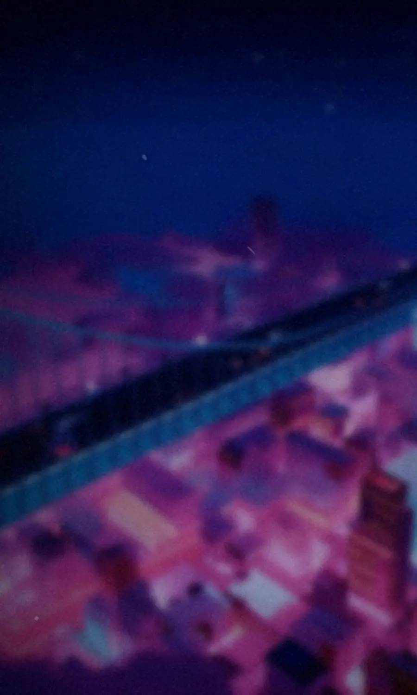

Protagonist — 死にたい虫が煩くて
わたし
Watashi
Label
売れない配信者動画配信者を目指すOL。画面の前では明るく笑うけれど、散らかった部屋でも会社でも、肩にとまる「死にたい虫」の羽音と不運続きの毎日に振り回されている。
An office worker who wants to make it as a streamer. On camera she smiles brightly, but in her messy room and at the office she is pushed around by bad luck, and by the buzzing of the death-wish bug on her shoulder.
Design notes
- 01青紫のぱっつんボブ
- 02×模様の浮かぶ瞳
- 03ボーダー服と紺のスーツ
Line
「チャンネル
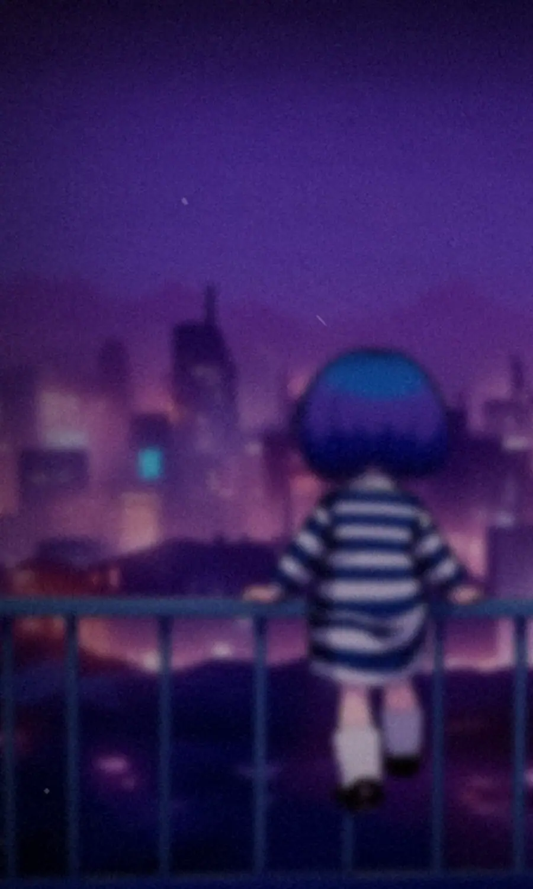

Character file — 死にたい虫が煩くて
死にたい虫
Shinitai Mushi
手のひら大の白い虫。いつも「わたし」の肩にとまり、「バズズズ」とうるさい羽音を立てては、日々の小さな不運を楽しそうに運んでくる。
A palm-sized white bug. It always sits on her shoulder, buzzing loudly, cheerfully delivering the small misfortunes of each day.
Design notes
- 01ふわふわの白い毛並み
- 02ピンクと水色の触角
- 03透ける羽とギザギザの歯
Line
「バズズズズ」
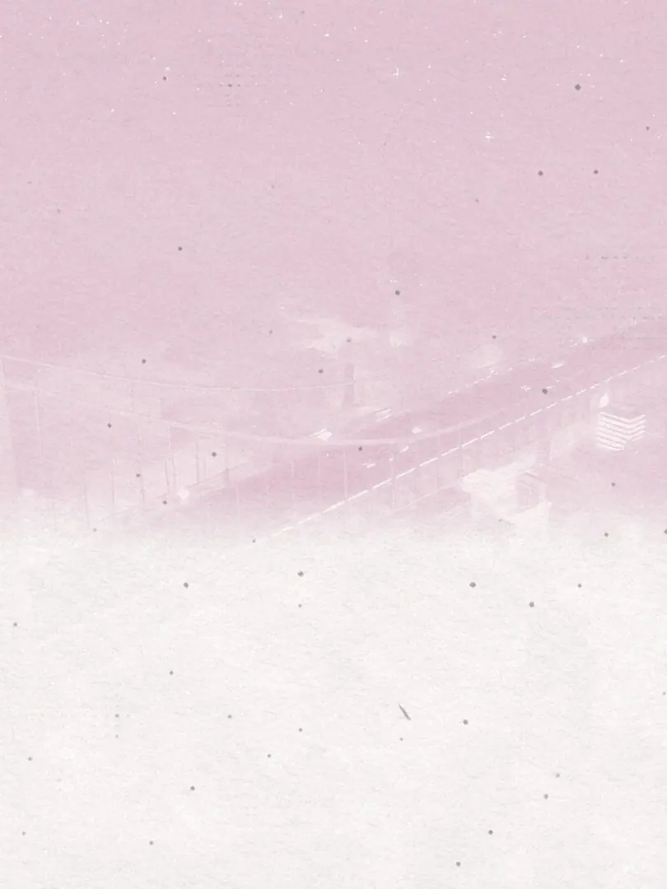

死にたい虫が煩くて — 2 characters
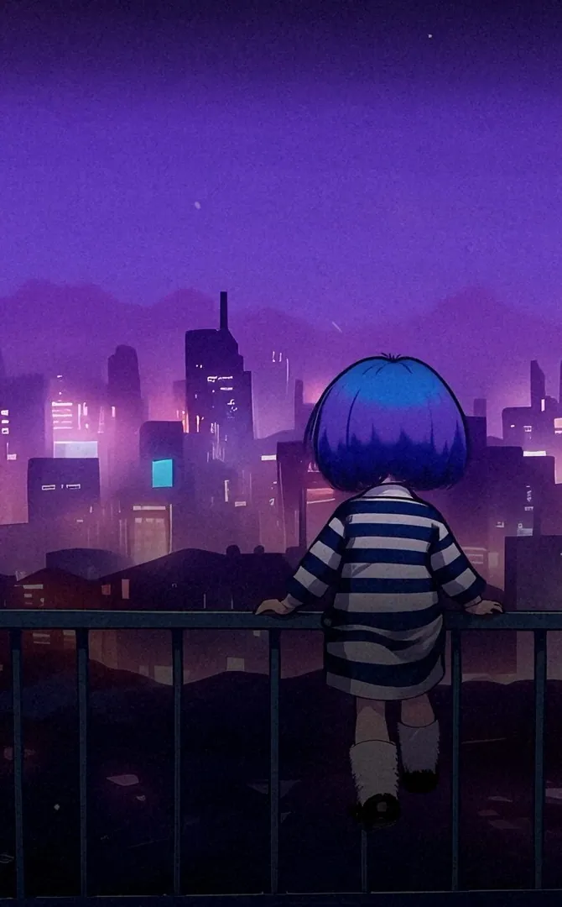
World — 死にたい虫が煩くて
「意味わからんが、
気楽にやりなさい。」
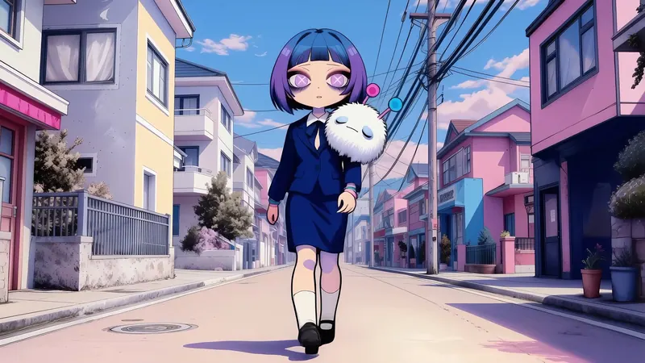
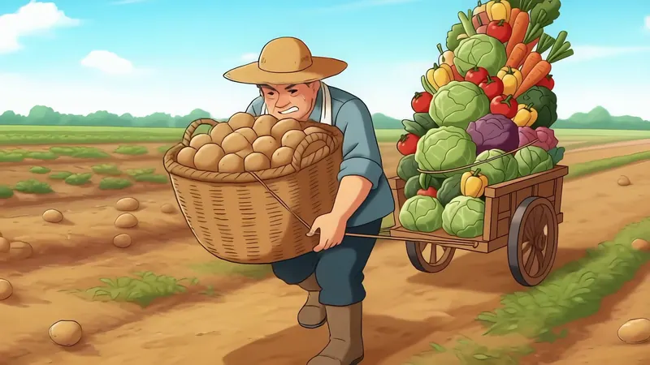
Stills and art from 死にたい虫が煩くて.
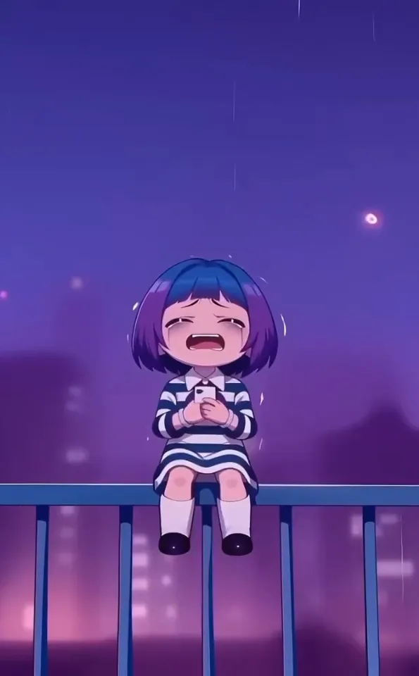
主題歌 — 死にたい虫が煩くて
死にたい虫が煩くて
My Death Wish Keeps Buzzing
Music — Hiromi Yanagi & Marika Hirata
Lyrics
ため
呼吸クリック／拍に
どうせならこの
踊りにしよ？
BUZZ!
BUZZ!
死にたい
苦しくて 愛しくて
「もう
でもまだ 送らなくて
死にたい
君の
泣き
生きたい
多分それで 充分だ
手のひらの
——笑っちゃった。
今日も
おやすみ、
Director's note
死にたい虫は、誰もが心のどこかで飼っている。この子にとっての虫は、バズという呪い。虫（むし）は、英語にすればバグ。無視（むし）される痛みも、同じ音で鳴く。羽音を消すのではなく、抱きしめたまま進む女の子の、デジタルの時代のバイラル。そんなふうに作った。
— 平田茉莉花
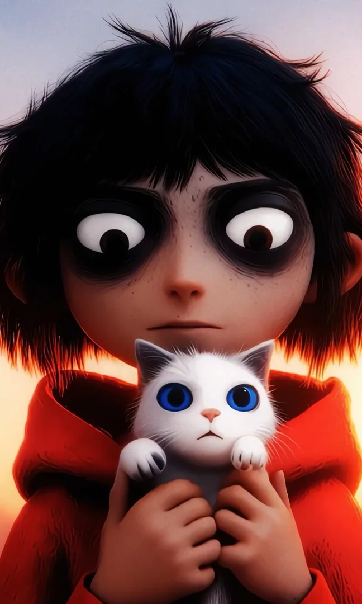
No. 02 — Short animation — Completed
誰にも祝われない
夜に
On a Night No One Celebrates

「いつでも、
誕生日だよ」
戦争が始まろうとしている、東京によく似た廃墟の街。家のない少年アオは、白い子猫リアの1歳の誕生日に、ミルクをあげたいと願う。屋上で出会ったのは、祝われなかった誕生日のホームビデオを燃やす少女ナナ。ふたりはミルクを探し、焦げたケーキを見つけ、小さな誕生日会をひらく。
GMO DESIGN AWARD 2025GRAND PRIX▶ WATCH THE FILMYouTube 約7分
- 形式
- 短編アニメーション（クレイ調）
- 尺
- 約7分
- 完成
- 2025.12
- 受賞
- GMO DESIGN AWARD 2025 GRAND PRIX
- 主題歌
- 「おめでとう」
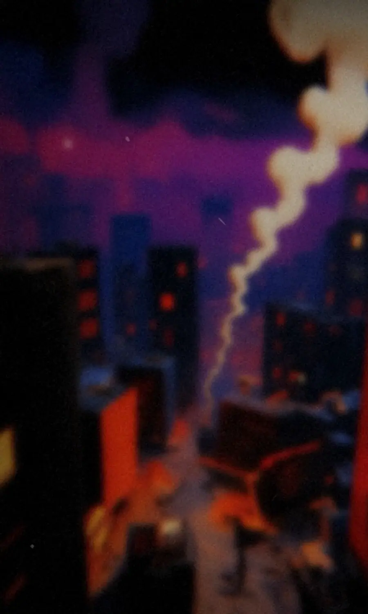

Protagonist — 誰にも祝われない夜に
アオ
Ao
戦争が迫る街で、高速道路下の段ボールハウスに暮らす少年。白い子猫の1歳の誕生日に、ミルクを贈りたいと願っている。皮肉屋だが、根は優しい。
A boy who lives in a cardboard house under the expressway, in a city on the edge of war. He wants to give his white kitten milk for her first birthday. Sarcastic, but kind at heart.
Design notes
- 01ぼさぼさの黒髪
- 02大きな丸い瞳
- 03着古した黒いシャツ
Line
「いつでも、
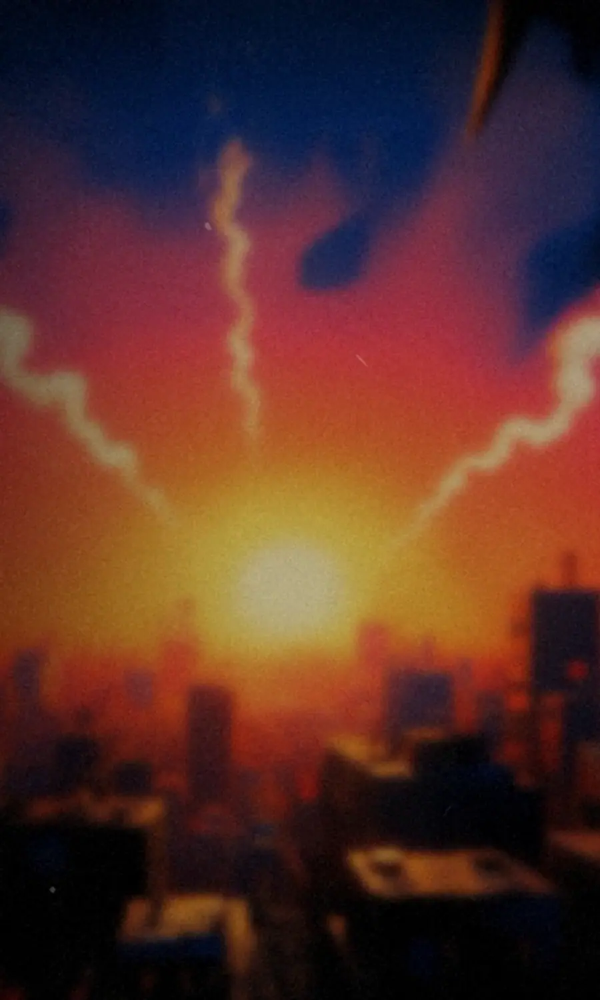

Character file — 誰にも祝われない夜に
ナナ
Nana
ビルの屋上で、家族の思い出が残るビデオテープを焚き火にくべていた少女。口は悪いがまっすぐで、アオと「世界平和のためのミルク探し」に出かける。
A girl on a rooftop, feeding videotapes of family memories into a bonfire. Foul-mouthed but straight, she sets off with Ao on a “search for milk for world peace.”
Design notes
- 01黒髪のぱっつんボブ
- 02赤いパーカー
- 03大きな丸い瞳
Line
「……
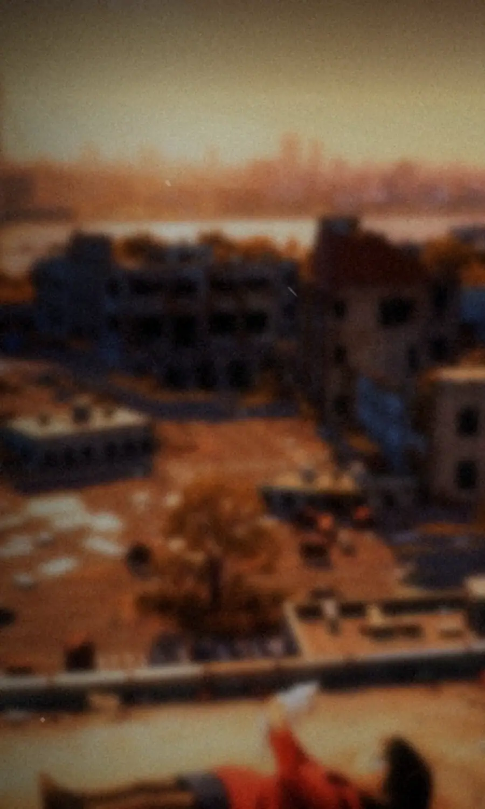

Character file — 誰にも祝われない夜に
リア
Ria
アオが段ボールハウスで大切にしている白い子猫。今日が1歳の誕生日。ナナの足元にすり寄り、古びたケーキ屋の扉へ二人を導く。
The white kitten Ao looks after in his cardboard house. Today is her first birthday. She rubs against Nana's feet and leads the two to the door of an old cake shop.
Design notes
- 01真っ白な毛並み
- 02大きな青い瞳
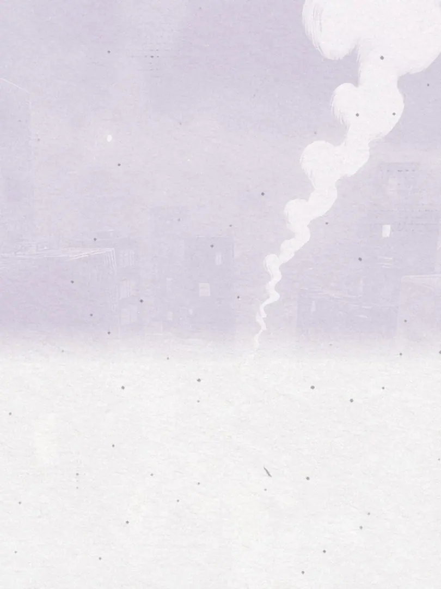
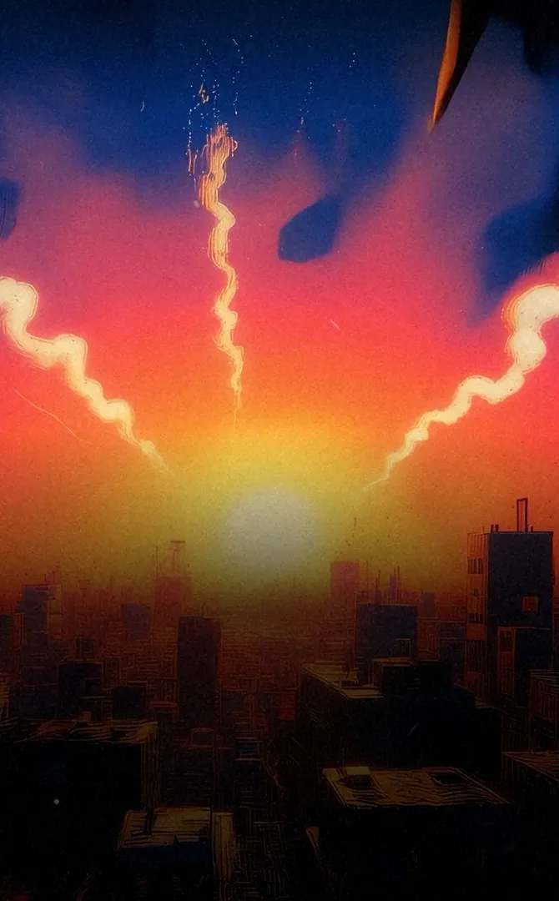
World — 誰にも祝われない夜に
祝われなかった
自分の
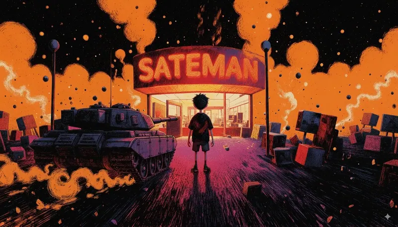
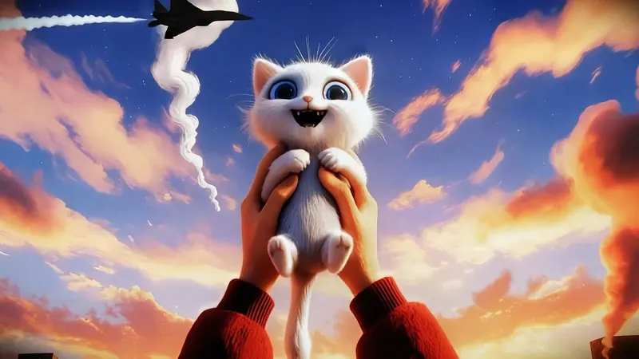
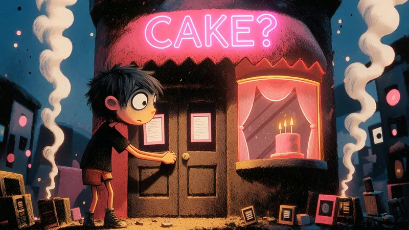
Stills and art from 誰にも祝われない夜に.
Visual development 1/2 — 誰にも祝われない夜に
街The city
戦争が迫る、東京によく似た廃墟の街。空には飛行機と鳥、地上には戦車と警報。
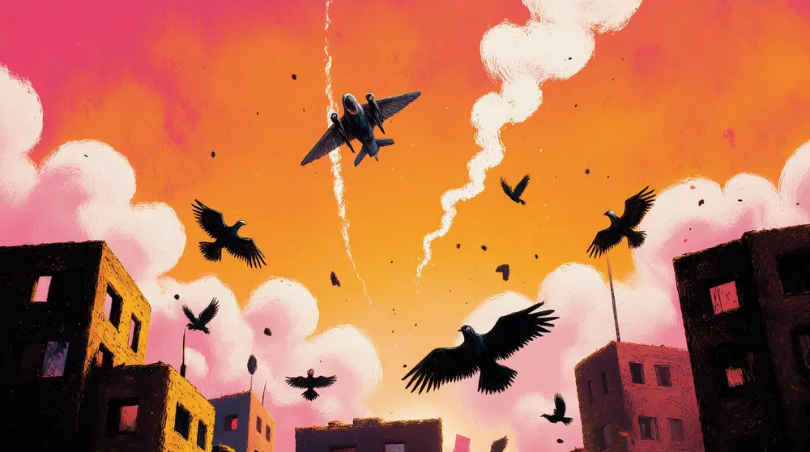
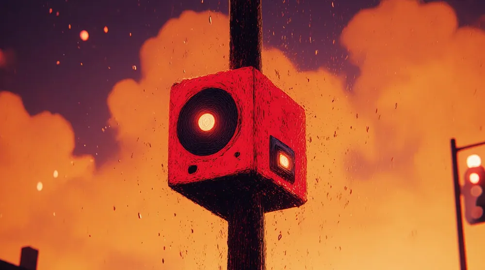
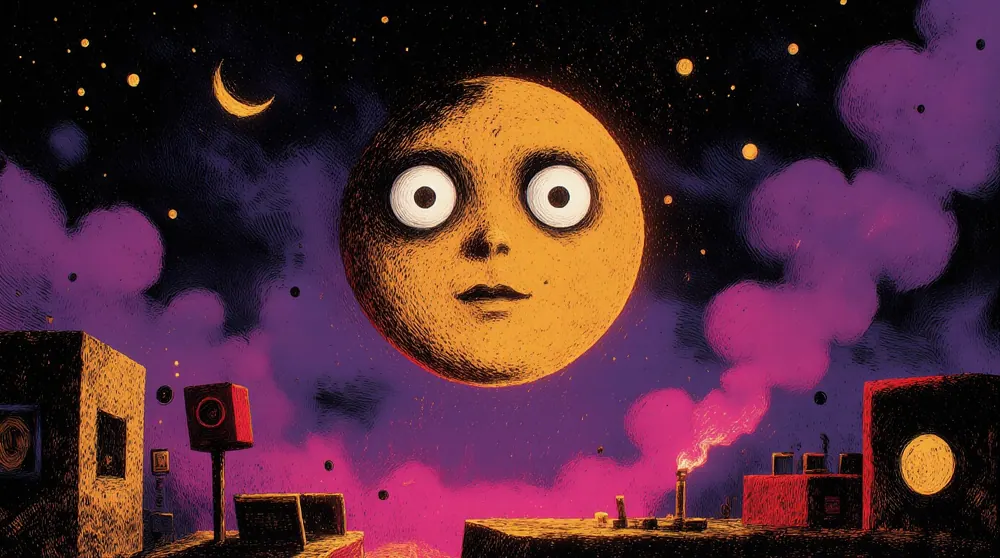
1 / 6swipe
Visual development 2/2 — 誰にも祝われない夜に
ミルクとケーキMilk and cake
白い子猫リアの1歳の誕生日に、ミルクを。
1 / 6swipe
主題歌 — 誰にも祝われない夜に
おめでとう
Omedetou
Lyrics
まいにちあさは
ひかっているのに
どうしてみずたまりは
くろくにごるの？
こうえんのすなばに
われた
すべったらきっと
あしをきるだろう
みんなわらってる
そのかげで
だれかがころんで
ないている
それでも
そらはきれいで
ぼくはここに
うまれてきた
おめでとう
おめでとう
あめのひのあとに
でかけてみたら
ぴちゃぴちゃはねて
くつがよごれた
あめんぼうがおよぐ
ちいさなみずうみ
まるでせかいが
ひっくりかえった
それでも
わらいながら
ぼくはここに
うまれてきた
おめでとう
おめでとう
Director's note
誕生日が誰のものか、アオは知らなかった。水たまりは黒くにごるし、砂場には割れたビンがある。それでも空はきれいで、ぼくはここに生まれてきた。だから歌詞は、ぜんぶひらがなで書いた。漢字をおぼえる前の目で、もう一度この世界を祝えるように。おめでとうは、誰が誰に言ってもいい。
— 平田茉莉花
No. 03 — Short animation — Completed
This is me

「わかりやすくなくて、
「かわいい」と言われ、「男子」という箱に押し込められてきた高校生・ハル。テレビの中で“わかりやすさ”を説くコメンテーターと、サメの顔に見える父。憧れの歌姫Divaと過ごすミュージカルのような夜は、仮面の男によって“矯正”の工場へと変わっていく。亡き母の赤いヒールを手がかりに、ハルは自分自身として立ち上がる。
WAIFF JAPAN 2026 KYOTOGRAND PRIX▶ WATCH THE FILMYouTube 約10分
- 形式
- 短編アニメーション（2.39:1）
- 尺
- 約10分
- 制作
- 2025.12 – 2026.02
- 受賞
- WAIFF JAPAN 2026 KYOTO GRAND PRIX
- 出演
- 吉永拓斗、逢坂良太、小林ゆう ほか


Protagonist — This is me
ハル
Haru
Label
男子オレンジの天然パーマにそばかすの高校生。口数は少ないが、「かわいい」という評価や押し付けられる「男子」の枠に、静かな違和感を抱えて生きてきた。
A quiet high-school student with curly orange hair and freckles, who has long felt out of place being called “cute” and being boxed in as “a boy.”
Design notes
- 01オレンジの天然パーマ
- 02そばかすとヘッドホン
- 03赤いピンヒール
Line
「わかりやすくなくても……


Character file — This is me
父
Father
ハルにはサメの顔に見えている、不器用で心配性な父親。「普通」の枠を信じてハルを律しようとするが、その根底には「傷ついてほしくない」という親心がある。
A clumsy, anxious father whose face looks like a shark's to Haru. He believes in the frame of “normal” and tries to keep Haru inside it; underneath is a parent who doesn't want his child to get hurt.
Design notes
- 01サメの頭
- 02白いシャツとジーンズ
Line
「父さんはただ……

Character file — This is me
Diva
Diva
街頭ビジョンやスマホの画面越しにハルを勇気づける、圧倒的なカリスマ。その歌声と言葉は、まだ自分の声を持たないハルの代弁者となる。
An overwhelming star who encourages Haru through street screens and phone screens. Her voice and words speak for Haru, who has yet to find a voice.
Design notes
- 01真紅のロングヘア
- 02シルバーのメタリック衣装
- 03銀のロングブーツ
Line
「みんな


Character file — This is me
母
Mother
すでに亡くなっているハルの母。遺影と赤いヒールを通して物語を支える。幼いハルを「ハルはハル」とまるごと肯定してくれた、最初の記憶の人。
Haru's late mother, who holds the story together through a memorial photo and a pair of red heels. The first person Haru remembers, who accepted the young Haru completely: “Haru is Haru.”
Design notes
- 01ゆるく波打つ長い髪
- 02ベージュのニットドレス
- 03赤いヒール
Line
「何を


Character file — This is me
世良ジュン
Sera Jun
穏やかな語り口で「社会の正論」を説く、テレビの人気コメンテーター。NEXIS社の代表取締役。「枠はみんなのため」という彼の言葉に、ハルの父もうなずく。その正体は、雨の夜ハルに傘を差し出す「仮面の男」。曖昧な存在を許さず、「選ばれやすい形」へ整えることを正義として実行する。社会の仕組みそのものの擬人化。
A popular TV commentator and CEO of NEXIS who preaches “society's common sense” in a gentle voice. He is also the masked man who offers Haru an umbrella on a rainy night: he tolerates nothing ambiguous and enforces “the easy-to-choose form” as justice. The system itself, personified.
Design notes
- 01黒いスーツに黒タイ
- 02無造作な黒髪
- 03穏やかな笑み
- 04市松模様の角の仮面
Line
「誰かを
「逃げ
This is me — 6 characters
World — This is me
「“かわいい”も、
俺が
Stills and art from This is me.
テーマソング 01 — This is me
Step. Click. Breath.
Vocal — Diva
Lyrics
見せかけの
すぐわかる
光り
派手すぎる
本物はいつでも
少し
笑われる
立ってる
映画みたいな
奇跡はない
地味で
起伏もない
それでも
「今」に
間に
息を
Step. Click. Breath.
Stand my ground.
名前を
始まる
Step. Click. Breath.
This is me.
誰の
いらない
イカサマの
目立つ
真実を
孤独
変身もしない
派手な
ただ
今日を
ありふれた
この
いちばん
厄介な
胸の
ずっと
静かに
燃えてる
Step. Click. Breath.
Stand my ground.
月がなくても
進める
Step. Click. Breath.
This is me.
私は
ここにいる
変わったんじゃない
決めただけ
黙らせるために
叫ばない
ヒールの
続く
私は
折れない
Step. Click. Breath.
Stand my ground.
嵐の
消えない
Step. Click. Breath.
This is me.
たまに
ミラクルは
起きる
唱えるのは
たった
Step. Click. Breath.
それで
十分
Director's note
ハルは変身しない。ベルトも、魔法のステッキもない。あるのは、亡き母の赤いヒールだけ。一歩を出す。かかとを鳴らす。息を整える。Step. Click. Breath. 誰にでも唱えられる三つだけの呪文を、Divaに歌ってもらった。奇跡を待つ歌じゃない。地味な毎日という戦場で、立っているための歌。
— 平田茉莉花
テーマソング 02 — This is me
ALIVE
Vocal — Diva
Lyrics
朝が
目を
今日が
思ってた
上手に
どこにも
泣くことだけ
少し
何も
立ち
ちゃんと
ここにある
消えたいほど
静かな
それでもまだ
触れている
I'm alive
震えたままで
I'm alive
間違えたままで
輝かなくてもいい
進めなくてもいい
この
答えなんだ
I'm alive
今日を
それだけで
もういいんだよ
誰かの
眩しくて
自分を
残った
でも
隠さない
初めて
温かかった
大丈夫って
「そばにいる」
その
救いだった
未来が
今ここで
息をしてる
それでいい
I'm alive
泣きながらでも
I'm alive
立ち
正解じゃなくていい
強さじゃなくていい
この
生きてる
I'm alive
今日を
明日を
無理に
もしもまた
夜に
あなたの
消えない
傷の
夜は
それを
信じていたい
I'm alive
まだここにいる
I'm alive
怖いままで
何者にもならなくていい
笑えなくてもいい
この
灯ってる
I'm alive
今日を
それだけで
ちゃんと
生きてる
Director's note
強くなる歌は、もうたくさんある。だから、弱いままでいい歌をつくった。朝が怖くて、泣くことだけ少し得意になった子に、Divaの声で「それでも生きてる」と言ってほしかった。輝かなくても、進めなくても、鼓動はちゃんと鳴っている。靴ひもを結ぶあいだくらい、世界は待ってくれていい。
— 平田茉莉花
テーマソング 03 — This is me
Venus
Vocal — Diva
Lyrics
Grow the ache before you dress it as a dream
Let the rage remind them you are seen
Every step uphill, lungs on fire
Never asking if I'll ever retire
I break the lock on moments meant to stay shut
I keep my balance by refusing to stop
My legs still tremble like a kid caught late
But I move anyway — I won't wait
Back stair exits, bell already rang
Dust on my hands, rules that never sang
Voices tried to pin me to their doubt
I learned fast what wasting time's about
Patience is a cage for hearts like mine
If I pause too long, I lose the line
Don't live your life too clean
Don't cry just to look serene
Don't wash your fear in lies
Or borrowed light
Don't live your life too clean
Don't numb what makes you feel
If you deny your pulse long enough
You'll turn against yourself
You say "dreams are only dreams"
I'm done pretending that's enough
You say "at least I kept my soul"
But a soul unused turns rough
Slow down, you say, let the blood calm down
But mine keeps pounding, won't back down
Open yourself, find yourself
Before the dark learns your name
Fear casts shapes that aren't even there
Empty shadows in recycled air
If all you see are curves and doubt
You miss the straight way calling out
Don't live your life too clean
Don't fake a peaceful smile
Don't dry your fire with fear
Or denial
Don't live your life too clean
Run while the ground is near
Because the deepest regret is standing still
When you could have moved from here
I move with the wind against my face
So I don't fade without a trace
I move, I move —
That's how I stay real
Director's note
Venusは美の女神の名前。でもこの歌の美しさは、きれいに整えられた形のことじゃない。Don't live your life too clean. 世界がハルを“矯正”しようとした分だけ、ハルは汚れたまま、震えたまま、自分の足で歩いていく。整っていない自分を、ようやく自分で認めた朝の歌。
— 平田茉莉花
Haru — the last words — This is me
最後の言葉
Haru, in front of the mirror.
あの
目をそらしたくなる
整っていない
誰にも
誰かに
ここにいちゃいけない
でも
自分が
でも……
How it was made — This is me
つくりかた
- 01
1フレームずつ、作る。
映像は1フレームずつ作っている。カットごとに絵を描き、動きを決め、つないでいく。
Every frame is made one at a time. - 02
自分の絵で、LoRAを学習させる。
キャラクターごとに、自分で描いた絵から独自のLoRAモデルを学習させている。だから、どのカットでも同じ子でいられる。
A custom LoRA model is trained from her own drawings for each character. - 03
髪も、服も、まず自分の手で。
髪や服、キャラクターは、まず一度自分の手で描く。生成はそのあと。描かなかったものは、画面に出さない。
Hair, clothes and characters are drawn by hand first; generation comes after.
Direction sheet — 演出指示書 CUT 11 学校（END）

Storyboard — one drawing per frame
No. 04 — Anime series — Sample film
Ego Heart

「かわいい
いいね、ランキング、比較。SNSの「EGOウイルス」に膨れあがった人間が、怪物になっていく街。違法ラボで生まれたフランケンシュタインのギャル、ポンチキとミルフォイは、怪物を倒して“承認エネルギー”の赤いガラスのハートを抜き取り、人間に戻していく。
- 形式
- 短編アニメシリーズ（1話5〜8分 × 6〜8話）
- 状態
- 企画・キャラクターデザイン・サンプル映像
- ターゲット
- Z世代（女性中心）
- 第1話
- 「赤いハートを撃ち抜け」


Protagonist — EGO HEART
ポンチキ
Ponchiki
Label
怪物武闘派でダウナーなフランケンギャル。人間時代はネグレクト家庭で育ち、心の拠り所は飼い猫のリアだけだった。「どうせ捨てられる」と先に距離を取るが、本当は居場所がほしい。
A tough, low-key Frankenstein gyaru. As a human she grew up neglected; her only comfort was her cat, Ria. Sure she will be thrown away anyway, she keeps her distance first. What she really wants is a place to belong.
Design notes
- 01巨大な猫のぬいぐるみハンマー
- 02ハンマーは愛猫リアの形
- 03ダウナーなフランケンギャル


Character file — EGO HEART
ミルフォイ
Milfoi
Label
優等生ハイテンションな元地下アイドルのフランケンギャル。明るく空気を読むのが上手いが、それは嫌われないための演技。本当は役割ではなく、存在で愛されたかった。
A hyper former underground idol, now a Frankenstein gyaru. Bright and good at reading the room, but it is an act so no one will dislike her. What she really wanted was to be loved for being, not for a role.
Design notes
- 01拡声器型の音波兵器
- 02声で仮面を壊す戦い方
- 03元地下アイドルのギャル
Line
「意味ないじゃん」


Character file — EGO HEART
サルミアッキ博士
Dr. Salmiakki
Label
制御不能非合法組織「ラボ」を率いる、死ねないヴァンパイア。ナルシストで変態気質だが、本音はポンチキとミルフォイを「怪物ではない存在」にしてあげたいと願っている。
An undying vampire who runs the illegal organisation “the Lab.” Narcissistic and a little perverse, but deep down he wishes he could make Ponchiki and Milfoi something other than monsters.
Design notes
- 01死ねないヴァンパイア
- 02表向きは研究者
- 03永遠の若さを持つ身体
Line
「君は
World — EGO HEART
「意味がなくても、
Stills and art from EGO HEART.
No. 05 — Short animation — Pilot
Rain on
the Meter
豪雨のメーター

「住む
雨の
雨の香港の夜。将来を決められたエリート家庭の少年は、顔なじみのタクシー運転手に「逃げて」と頼む。元ヤクザの運転手は、行き先のないまま、雨の街を走り出す。
- 形式
- 短編アニメーション（7〜10分・英語台詞）
- 状態
- 企画書 v4・パイロット映像（15秒）
- 狙い
- 国際短編映画祭
- 主題歌
- 『RAIN ON THE METER』ピアノ・ギター・二胡

Protagonist — RAIN ON THE METER
少年
Shonen
Label
良家の少年香港の上流階級に生まれた、グローバル企業エリートの息子。敷かれたレールの重さに削られ、いつも乗るタクシーでだけ本音を漏らせる。ある雨の夜、運転手に「逃げて」と頼む。
The son of a global executive, born into Hong Kong's upper class. Worn down by the track laid out for him, he can only speak his mind in the taxi he always takes. One rainy night he asks the driver to run.
Design notes
- 01よれた制服と不揃いの黒髪
- 02そばかすと半分閉じた目
- 03ソフビ風の丸い輪郭
Line
「逃げて」

Character file — RAIN ON THE METER
運転手
Untenshu
Label
元ヤクザ過去を畳み、まっとうにタクシーを転がしてきた元ヤクザ。いかつく渋いが、どこかくたびれている。少年の「逃げて」を笑い飛ばさず、あてのない夜のドライブに付き合う。
A former yakuza who folded up his past and has driven a cab honestly ever since. Tough and weathered, a little worn out. He doesn't laugh off the boy's “run,” and goes along on a drive with no destination.
Design notes
- 01深い皺、傷痕、無精髭
- 02袖から覗く色あせたタトゥー
- 03少年の「丸」と対比する「角」
Line
「逃げて、
RAIN ON THE METER — 2 characters
World — RAIN ON THE METER
メーターが
ふたりは
Stills and art from RAIN ON THE METER.
No. 06 — Feature animation — Pilot
Judge

「世界は
22世紀の東京。AIヘッドギアで、人は動物と話せるようになった。けれどその翻訳は、動物たちの本当の声をそっと“なめらかに”していた。本当の声が聞こえる11歳の少年ヨルは、行方不明の母を探すなかで、世界中から「危険」と呼ばれるオオカミ・ヨハンと出会う。ふたりは水没した旧東京へ落ちていく。ヨハンの嘘が明らかになったとき、ヨルは選ぶ。それでも、信じると。
▶ WATCH THE FILMYouTube
- 形式
- 長編アニメーション（95〜120分）
- 状態
- 企画開発中・パイロット映像あり
- プロデューサー
- 伊香佑志
- 主題歌
- 「あたたかいほうへ」作詞 平田茉莉花


Protagonist — JUDGE
ヨル
Yoru
Label
病気裁判官の一人息子で、小学5年生。行方不明の母を探し、得意のハッキングで禁断のデータに侵入する。周りが「病気」と呼ぶその耳は、本当の声を聴き取る母譲りの才能。
The only son of a judge, in fifth grade. Searching for his missing mother, he hacks his way into forbidden data. The ears everyone calls “sick” are her gift: they hear the real voices under the translation.
Design notes
- 01琥珀色の瞳（母譲り）とそばかす
- 02耳元と首の翻訳ヘッドギア
- 03だぶつき気味の青グレーの長袖
Line
「僕は


Character file — JUDGE
ヨハン
Johan
Label
凶悪なオオカミスラムで育ち、世間から「凶悪」と恐れられるオオカミの青年。本当は気が弱くて優しく、見た目は大人なのに話し方はたどたどしい子供。ヨルと衝突し、共に地下へ落ちていく。
A young wolf raised in the slums, feared by the world as “vicious.” In truth he is timid and kind; he looks like an adult but talks haltingly, like a child. He clashes with Yoru, and the two fall underground together.
Design notes
- 01シルバーの短毛（ほぼ白）
- 02約180cm、細身で猫背気味
- 03擦り切れた暗い色のチュニック
Line
「あぁ……

JUDGE — 8 characters
……公平に、 済ませようか
お守りだよ
俺は、人間を 信じるのを、 やめた
乗れ
ヨル！集会場が！ 襲われた！
子供の言うことです。 気にする 必要はないでしょう
旧式はこれだから！
お前は、お母さんに 似ているね。 手の 温度が
World — JUDGE
ふたつの東京
Two Tokyos, one under the water.
22世紀の東京。AIヘッドギアで、人は動物と話せるようになった。けれどその翻訳は、動物たちの本当の声をそっと“なめらかに”していた。
Level +1
上の街
白く整った海辺の街と、裁判所。ヨルの父は裁判官。
Level −1
下の街
水没した旧東京。地下水路と、ランタンの灯る市場。ヨルとヨハンは、この街へ落ちていく。
Visual development 1/11 — JUDGE
上の街The upper city
22世紀の東京。白い海辺の街に水路がめぐり、ペリカンが薬を届ける。
1 / 6swipe
Visual development 2/11 — JUDGE
ヨルの部屋Yoru's room
裁判官の家の子ども部屋。ヨルはここから、禁断のデータに侵入する。
1 / 6swipe
Visual development 3/11 — JUDGE
裁判所とソフィアThe court and Sophia
光の差す白い法廷。海の上には、翻訳AIの会社ソフィア。
1 / 6swipe
Visual development 4/11 — JUDGE
シャトルThe shuttle
追放の判決。ヨルとヨハンを乗せたシャトルが、海の上を走る。
1 / 6swipe
Visual development 5/11 — JUDGE
地下Underground
海の底の、さらに下。光の格子と水の音だけが届く、旧東京の地下水路。
1 / 6swipe
Visual development 6/11 — JUDGE
下の街Old Tokyo
水没した旧東京。はみ出し者の動物たちが暮らす、ランタンの市場。
1 / 6swipe
Visual development 7/11 — JUDGE
灯籠の街The lantern city
星のように灯籠がのぼる街。ここで、ヨルとヨハンは並んで座る。
1 / 6swipe
Visual development 8/11 — JUDGE
街のデザインThe city, designed
塔を中心に放射状に広がる上の街。海の上のソフィア、崖の家、ヨルの家。
1 / 6swipe
Visual development 9/11 — JUDGE
ヨハンの記憶Johan's memory — the picture book
森を逃げる白いオオカミの子。黒い手に追われ、傷ついて、星空を見上げる。
1 / 6swipe
Visual development 10/11 — JUDGE
小道具と街の住人Props and townsfolk
ヨルの端末、見守りドローン、ノールのバイク。鷲の裁判官、ワニの屋台、ソフィアの機械の体。
1 / 6swipe
Visual development 11/11 — JUDGE
最深部へToward the deepest place
修正版ティザーより。機械の兵、白い回廊、光の原、そして空へ。
1 / 6swipe
テーマソング 01 — JUDGE
あたたかい方へ
Toward the Warmth
Lyrics
ねえ 聞こえてる 声にならない
壁の
ねえ 見えてる 光にならない
暗闇の
何をしんじたらいいんだろう
ちょっと
信じるのは
自分で
疑う
世界は
ねえ 僕たちは
誰の
ねえ 君たちは
名前で
何をしんじたらいいのかな
自分の
信じるのは
自分で
疑う
世界は
信じるのは
僕ら
疑いながら
世界は
世界は
温かい
Director's note
ヨハンには名前がなかった。みんな、ただ“オオカミ”と呼んだ。だからヨルは言う。「きみ、今からヨハン」。この歌は、その直後に流れはじめる。翻訳された声より、自分の耳を。正しさより、あたたかいほうを。疑う心は悪くない。それでも信じてみたら、世界は少しだけ綺麗に見えた。
— 平田茉莉花
テーマソング 02 — JUDGE
未訳星
Miyakusei — the untranslated star
Lyrics
複雑な
まぶしく
目を
靴音を
雨上がり 夜明けの
正しいことを
間違えないように
言葉にすること 覚悟を
ぼくらの
胸の
霞む
とめどなく
降り
信じるものを
肩を
笑い
降り
おびえた
ゴールは
形も
街の
ぼくらの 未訳星
鳴らせ 鳴らせ
声にもならないまま
鳴らせ 鳴らせ
星になれ
君は
僕の
君は
似てないふりをして 同じ
苦しいときは 君がそばにいて
僕もそばにいてあげたくて
つまらない
輝け ぼくらの
居場所を
夏風に
ぼくらの
ポケットにしまった
風を
あたたかい
降り
泣けない
坂道をのぼる 濡れた
うるさいくらいの
神様に
ぼくの
君に
君のために
降り
おびえた
降り
僕の
一緒に
鳴れ 鳴れ あふれる
鳴れ 鳴れ ぼくらの
降り
呼び
水平線が
雨上がり 靴音を
雨上がり 夜明けの
光れ ぼくらの
Director's note
未訳星は、まだ訳されていない星。AIは動物たちの声をなめらかに訳すけれど、本当の声は、いつも訳しきれなかった部分に残っている。うまく言えない言葉、整えられない息、泣けない夜。ゴールも形も、ぼくらが決める。訳されないまま光っていい。そう思って、ヨルとヨハンの歌にした。
— 平田茉莉花
No. 07 — Short animation — Completed
Honor

「みんな、
日本の南の島。お盆の最後の夜は、帰ってきた死者を讃え、送り出す祭りの夜。母に置いていかれた15歳の発明少年・ホマレは、死者を一晩だけ呼び戻す装置「CAMEON!!」で母に会おうとする。けれど目覚めたのは、80年前の戦争で亡くなった10歳の少女・サチだった。コンビニのおにぎり、祭りの太鼓、街にあふれる飢えた影。ひとりでごはんを食べてきた少年に、たった一晩の“家族”ができる。
▶ WATCH THE FILMYouTube 約14分
- 形式
- 短編アニメーション（2.39:1）
- 尺
- 約14分
- 完成
- 2026.09
- 出品
- Higgsfield Global Film Festival
- 舞台
- 日本の南の島・お盆の最後の夜


Protagonist — HONOR
ホマレ
Homare
Label
十代の天才死者を一晩だけよみがえらせる装置「CAMEON!!」を発明した天才。アメリカで暮らし、食事はひとりでサプリ。亡き母の墓がある南の島を訪れる。
A prodigy who invented CAMEON!!, a device that brings the dead back for one night. He lives in America and eats alone, mostly supplements. He comes to the southern island where his late mother's grave is.
Design notes
- 01黒い天然パーマ
- 02眠そうな目
- 03スマイル柄のベスト
Line
「十二年遅いんだよ」
「ひとりで

Character file — HONOR
サチ
Sachi
Label
名前のない魂80年前の戦争で亡くなった女の子。「家族に、ごはんを食べさせたい」という願いを残し、お盆の最後の夜によみがえる。元気いっぱいで、おにぎりを半分こする優しさを持つ。
A girl who died in the war eighty years ago. She left a wish, “I want to feed my family,” and returns on the last night of Obon. Full of energy, and kind enough to split a rice ball in half.
Design notes
- 01三つ編みのおさげ
- 02赤い柄の上着ともんぺ
- 03裸足に舞う火の粉
Line
「……

Character file — HONOR
黒い影
Black Shadows
CAMEON!!の爆発で、町のあちこちから立ち上った黒い影。祭りの客には見えない。おにぎりの匂いに引かれて群がり、無数の手を伸ばす。正体は、80年前から空腹のままの幽霊たち。
Black shadows that rise all over town after the CAMEON!! blast, invisible to the festival crowd. Drawn by the smell of rice balls, they swarm and reach out with countless hands. They are ghosts who have stayed hungry for eighty years.
Design notes
- 01細く伸びた手足
- 02白く光る目
- 03ほどけた黒い糸の体


Character file — HONOR
巨大な影
The Giant Shadow
黒い影たちがひとつにまとまった、見上げるほどの巨大な影。サチを飲み込み、CAMEON!!の光に引かれて浜へ迫る。ホマレが胸をこじ開けると、黒い糸がほどけ、痩せた幽霊たちに戻っていく。
The black shadows merged into one, towering over the town. It swallows Sachi and closes in on the beach, drawn by the light of CAMEON!!. When Homare pries its chest open, the black threads unravel and it falls back into thin, hungry ghosts.
Design notes
- 01影が集まってできた巨体
- 02黒い糸の束の体
- 03胸の奥に、サチ

HONOR — 5 characters
十二年遅いんだよサチSachi主人公・10歳名前のない魂
……お米、 あまい
ひとりで飯食うのは、 もう 終わりなんだよぉぉッ！
World — HONOR
「ごはんは、
おいしくない。」
Stills and art from HONOR.
主題歌 — HONOR
KID
Lyrics
Being alive, passing it on
down a line that never broke
a hundred hands, one small fire
carried through the wind to you
Ten generations back, a thousand mothers
a hundred back, they outnumber the stars
if one of them had let go, just one
would this wind still smell the same?
On the days I can't be
who I wanted to be
I'm still somebody's kid
We're all somebody's kid
the stones, the trees, the rain, the summer crickets
we're all somebody's kid
you and me and that kid down the road
Rain to the sea, sea to the sky
we borrow the turning water
hold a shape for a little while
then fold our hands, and give it back
Why do we fight?
same blood running, same table
no need to hurry, we all
meet in the same place someday
so why burn another summer down
Pray in the festival drums
grow something green, pray again
sing a lullaby, pray again
say "take care out there", pray again
long for the sky
cry if you want to cry
the day you want to sing
you're already singing
We're all somebody's kid
the ones who never made it home
the ones who lost their names
we're all somebody's kid
the kid across the sea
the kid who isn't born yet
everyone, everyone
somebody's kid
Being alive, passing it on
a line that never once broke
all the way to you
(the rice tastes sweet tonight)
Welcome home.
Director's note
お盆の最後の夜は、帰ってきたご先祖さまを、もう一度あの世へ送り出す夜。そんな夜に、“おかえり”で終わる歌をつくった。十代さかのぼれば千人の母がいて、誰かひとりでも手を離していたら、この風の匂いは違っていた。帰れなかった子も、名前をなくした子も、海の向こうの子も、まだ生まれていない子も。みんな、だれかのうちの子。
— 平田茉莉花
No. 08 — Action adventure game — In production
ホシノメ
Hoshinome
見られなくなった街で

「黒いうさぎになった
神様の
空の大きな目「オオメ」が閉じた街・ミトメ。誰にも見られなくなった者は、トゲだらけの黒い怪物「クロモノ」になってしまう。人々は“見られている”ために、目を縫いつけた服を着る。白い髪の少年シロは、黒いうさぎになった兄クロを背負い、塔を目指す。各章のボスは、願いが怪物になってしまった誰か。シロは倒すのではなく、最後まで“見届ける”。
- ジャンル
- 高難易度・横スクロールアクションアドベンチャー
- 構成
- プロローグ＋全7章＋エピローグ
- 状態
- 第1章プレイアブル（フルボイス）・第2章制作中
- 動作
- PC・ブラウザ（HTML5）
- 展開案
- スピンオフ短編アニメ

Protagonist — ホシノメ
シロ
Shiro
白い髪と赤い目の無口な少年。黒いうさぎになった兄クロを背負い、兄を元に戻すため塔を目指す。助けを求めるのは苦手だが、兄の犠牲には本気で怒る。
A quiet boy with white hair and red eyes. He carries his brother Kuro, now a black rabbit, on his back and heads for the tower to change him back. He is bad at asking for help, but truly angry when his brother sacrifices himself.
Design notes
- 01白い髪と赤い目
- 02星の目がついた赤い大きな上着
- 03マンタ型の白い帽子と厚底靴
Line
「見てる。


Character file — ホシノメ
クロ
Kuro
シロの兄で、血はつながっていない。今は影のような黒いうさぎの姿で、言葉はほとんど話さない。それでも袖を引き、道を示し、危険を払って弟を支える。
Shiro's brother, not by blood. Now a shadow-like black rabbit who barely speaks. Still, he tugs a sleeve, shows the way, and wards off danger for his little brother.
Design notes
- 01影のような真っ黒なうさぎ
- 02ときどき立てる長い二本の耳
- 03シロの背中にしがみつく
Line
「じゃあ、

Character file — ホシノメ
クロズキン
Kurozukin
黒い布をかぶり、宙に浮く長身の相棒。半分クロモノで口は悪いが、先回りして道を開けてくれる。布の下だけは、誰にも見せたがらない。
A tall companion who floats under a black cloth. Half Kuromono and sharp-tongued, but always goes ahead to clear the way. The one thing he won't show anyone is what's under the cloth.
Design notes
- 01頭から黒い布をかぶった長身
- 02尖った二つの耳と覗く目だけ
- 03地面から浮いて移動する
Line
「布の


Character file — ホシノメ
サンカク
Sankaku
目のついた三角帽子の少女。道順と目印に詳しい案内役で、戦い方も教えてくれる。いつも「着いたら教えて」と言うが、自分の帰る場所は答えない。
A girl in a triangular hat with an eye. A guide who knows routes and landmarks, and teaches how to fight. She always says “tell me when we get there,” but never says where she'll go home.
Design notes
- 01オレンジ色の大きな三角帽子
- 02帽子についた二つの目
- 03小柄な子どもの姿
Line
「その


Character file — ホシノメ
ヒトツメ
Hitotsume
Label
市場通りの目守市場通りを見守る目守。かつては荷物を運び、迷子を探して皆に慕われていた。オオメが閉じて街を守りきれなくなり、目を集め始める。
The eye-keeper of the market street. Once loved for carrying loads and finding lost children; when Oome closed and he could no longer protect the town, he began collecting eyes.
Design notes
- 01赤い三角の大きな体
- 02青い二本の角と耳飾り
- 03胴の中央に青い一つ目
Line
「赤イ


Character file — ホシノメ
ハレ（仮）
Hare
Label
夜の坂の目守祭りのために作られた張り子の猫に宿った、小さな神様。夜の坂の祭りを仕切る座長で、「任せとけ」が口ぐせ。大物ぶる笑い顔の奥に、怯えを隠している。
A small god living in a papier-mache cat made for a festival. He runs the festival on the night slope; “Leave it to me” is his catchphrase. Behind the big-shot grin he hides his fear.
Design notes
- 01張り子の猫の大きな頭
- 02額に青い目と点の印
- 03長く歪んだ金の冠と金の扇
Line
「任せとけ。


Character file — ホシノメ
アカネ
Akane
シロより年上の若者。軽口をたたき、何でも損得で決めるように見えるが、自分の食事を削って相棒ナギを支えている。相棒を救うため、シロとは別の道を選ぶ。
A young man older than Shiro. Flippant, he seems to decide everything by profit and loss, but cuts his own meals to keep his partner Nagi going. To save his partner, he takes a different road from Shiro.
Design notes
- 01大きな淡い色の髪
- 02赤橙のコート
- 03修理用の工具
Line
「待ってる

Character file — ホシノメ
ダル
Daru
崩れた仕立て屋の主で、元服屋の少年。いつも眠そうで、誰も来ない屋根の上で一人になりたがる。傷んだ服を見ると、会話の途中でも糸の色を探す。
Master of a collapsed tailor's shop, once a clothier's boy. Always sleepy, he wants to be alone on a rooftop no one visits. Shown damaged clothes, he hunts for a thread colour mid-sentence.
Design notes
- 01ぼさぼさの黒髪と眠そうな目
- 02緑のオーバーサイズの上着
- 03ひょろりとした猫背
Line
「……


Character file — ホシノメ
ゴメ
Gome
五つの目がついた赤いコートの老人。古い話を覚えている語り部で、オオメが閉じたわけを伝承で語る。若い人の話を聞いて、覚え直せる大人でもある。
An old man in a red coat with five eyes. A storyteller who remembers old tales and tells, through legend, why Oome closed. An adult who can still listen to the young and learn again.
Design notes
- 01五つの目がついた赤いコート
- 02箱のように大きな外套
Line
「倒すのではない。

Character file — ホシノメ
クモ
Kumo
雲のような髪と厚底靴の若者。服装への強いこだわりがあり、靴の傷には大騒ぎする。そのくせ他人の傷には、何も言わずに布を差し出す。
A youth with cloud-like hair and platform shoes. Obsessed with clothes, he makes a huge fuss over a scuffed shoe, yet offers a cloth, without a word, to anyone who is hurt.
Design notes
- 01雲のような金色の髪
- 02丈の短い青いトップス
- 03高い厚底靴
Line
「じゃあ 見ててよ。
World — ホシノメ
「見てる。
Stills and art from ホシノメ.